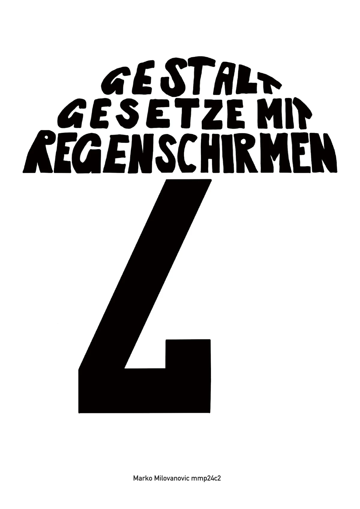

Videoproduktion
Konzeption, Aufnahme und Produktion von Videos für Social Media, Unternehmen und Hochschulprojekte.
Kreation & Produktion
Ich entwickle visuelle Inhalte, die Informationen verständlich vermitteln, Emotionen auslösen und Geschichten erlebbar machen.
Mein Ansatz
Im Bereich Content und Visual Storytelling verbinde ich Konzeption, Gestaltung und audiovisuelle Produktion.
Vom ersten Konzept über die Aufnahme bis zum fertigen Video achte ich darauf, dass die Gestaltung nicht nur gut aussieht, sondern eine klare Aussage transportiert und zur jeweiligen Zielgruppe und Plattform passt.
Dabei arbeite ich sowohl hinter der Kamera als auch teilweise davor. Zu meinen Aufgaben gehören Dreharbeiten, Videoschnitt, visuelle Gestaltung und die Aufbereitung von Inhalten für Social Media.
Kompetenzen
Konzeption, Aufnahme und Produktion von Videos für Social Media, Unternehmen und Hochschulprojekte.
Videoschnitt, Bildbearbeitung, Tonbearbeitung und plattformgerechte Aufbereitung audiovisueller Inhalte.
Entwicklung von Geschichten, die Informationen mit Emotionen, klaren Botschaften und starken Bildern verbinden.
Imagefilm
Entwicklung und Produktion eines Imagefilms für das Adore Beauty Studio. Im Zentrum stehen die Atmosphäre des Studios, die persönliche Betreuung und die visuelle Präsentation der angebotenen Dienstleistungen.
Dokumentarischer Kurzfilm
Ein dokumentarischer Kurzfilm, der im Rahmen einer Hochschulproduktion in Berlin entstand. Das Projekt wurde im Team entwickelt und umgesetzt und verbindet dokumentarisches Arbeiten mit visuellem Storytelling.
Editorial Design & Illustration
Konzeption und Gestaltung einer 20-seitigen Broschüre, welche die sieben Gestaltgesetze anhand von Regenschirmen visuell und verständlich erklärt.
Sämtliche Illustrationen entstanden mit Procreate auf dem iPad. Das Seitenraster, die Typografie und die vollständige Gestaltung der Broschüre setzte ich anschliessend in Adobe InDesign um.
Projekt ansehen ↗
Broschüre entdecken ↗Berufliche Content-Produktion
Neben eigenständigen Filmprojekten produziere ich regelmässig audiovisuelle Inhalte für Unternehmen und Social-Media-Kanäle.
Social Media & Advertising
Bei der FSWI konzipiere und produziere ich Videos für Social Media und digitale Werbekampagnen. Dabei übernehme ich Dreharbeiten, Videoschnitt und die plattformgerechte Aufbereitung der Inhalte.
Je nach Format arbeite ich hinter der Kamera oder stehe selbst vor der Kamera. Die Produktionen werden sowohl für organische Beiträge als auch für Meta Ads eingesetzt.
Short-Form Content
Für cdg produzierte ich kurze Videoformate und Social-Media-Inhalte. Dazu gehörten Dreharbeiten, Fahrzeug- und Showroomaufnahmen sowie die Umsetzung von Shorts.
Der Fokus lag auf kurzen, dynamischen Videos, die Produkte und Aktionen schnell verständlich und visuell ansprechend vermitteln.
Weitere Erfahrung
Entwicklung und Umsetzung verschiedener Filmprojekte im Team. Dabei sammelte ich Erfahrung in der gemeinsamen Konzeption, der Organisation von Dreharbeiten und der audiovisuellen Umsetzung.
Produktion audiovisueller Inhalte, die konkrete Kommunikations- und Marketingziele unterstützen und für unterschiedliche Plattformen aufbereitet werden.
Entwicklung kurzer und aufmerksamkeitsstarker Videoformate für Reels, Shorts und digitale Werbeanzeigen.
Produktion